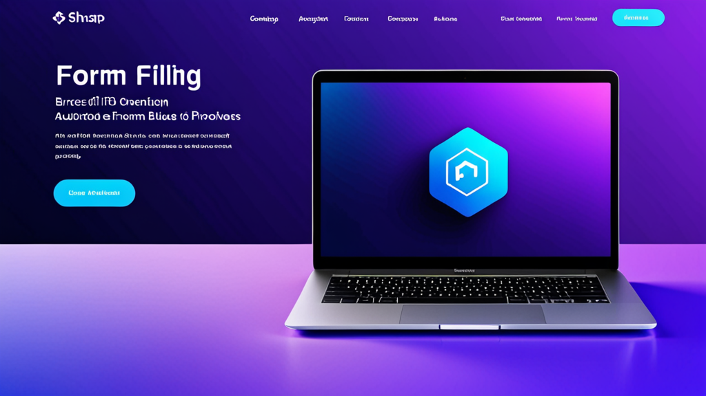

如何自動化醫療表單填寫：醫療團隊實用指南
每家醫療診所都深知這種痛苦：在同一個病患姓名、出生日期和保險證號碼，不斷複製貼上到一張又一張的表單。你把它輸入電子病歷系統，再貼到事前授權入口網站，然後又寫到紙本轉診單上。這不僅重複、容易出錯，更耗費了本應用於病患照護的時間。
學習如何自動化醫療表單填寫，是醫療診所能實現最高投資報酬率的改變之一。這並不需要全面更換軟體或啟動大型IT專案。只要選對工具，搭配幾個工作流程調整，就能將填表時間縮短50%到70%。
本指南將介紹任何醫療專業人員今天就能採取的實務步驟。
為什麼手動填表正在耗費診所成本
我們來看看數據。一位典型的櫃檯人員每天要填寫20到40份病患表單。光是基本資料，每份表單就需要3到5分鐘。這表示每天有1到3小時花在理應自動化的資料輸入上。
真正的成本不只是時間——更是準確性。手動輸入時，錯誤就會悄悄出現：
- 保險會員號碼數字顛倒
- 病患姓名拼寫錯誤
- 理賠申請單上的出生日期錯誤
- 遺漏提供者的NPI號碼
每一個錯誤都會引發連鎖效應：理賠被拒、事前授權延遲、病患不滿，以及為了修正錯誤而打更多電話。
醫療表單自動化直接解決了這些痛點。它不會取代人類判斷——而是移除機械化、重複性的資料輸入部分，讓你能專注於例外情況和與病患面對面的工作。
自動化醫療表單填寫所需的條件
在選擇解決方案之前，先了解一個好的自動化工作流程是什麼樣子。目標是使用你已有的資料來填寫表單，而不需要重新輸入。
你需要以下條件：
1. 一個中央資料來源
你的病患基本資料、保險明細和提供者資訊需要存放在可存取的地方。可以是：
- 你的診所管理系統
- 一個安全的試算表（適用於小型診所）
- 專用的病患資料入口網站
資料不需要完美——但需要有條理。先清理你最常用的欄位：病患姓名、出生日期、地址、保險公司和證號、主要照護提供者姓名和NPI。
2. 一種將資料插入表單的方法
這就是醫療表單填寫工具發揮作用的地方。最好的解決方案是以瀏覽器擴充功能的形式運作，能辨識表單欄位並自動填入。它們不需要與你的電子病歷系統整合，也不需要特殊的API。
尋找一個具備以下條件的工具：
- 能在多個網站和入口網站上運作（不限於單一電子病歷系統）
- 將資料保存在本地端（隱私優先）
- 讓你能自訂哪些欄位對應哪些資料點
- 同時支援文字欄位和下拉式選單
3. 常用表單的範本
如果你的診所經常填寫相同的轉診單或事前授權申請表，就建立範本。儲存常用欄位——你的診所地址、常見診斷碼、經常使用的提供者資料——這樣每次只需要填寫病患專屬的資訊即可。
逐步教學：自動化你的第一種表單
我們來實際演練一個案例。假設你處理影像檢查的事前授權申請。每次申請需要：
- 病患基本資料
- 保險資訊
- 轉診提供者資料
- 臨床適應症
以下是自動化的方法：
步驟1：辨識表單欄位。 開啟事前授權入口網站，記下每一個欄位。將它們分類：病患資訊、保險資訊、提供者資訊、臨床資訊。
步驟2：準備你的資料。 建立一個簡單的參考文件，包含診所的標準資訊——你的NPI、稅務ID、診所地址、常見的ICD-10代碼。至於病患資料，則從你的預約系統中提取。
步驟3：使用醫療自動填寫擴充功能。 安裝一個電子病歷表單填寫工具。設定它辨識你事前授權入口網站中的欄位。將病患姓名欄位對應到你的病患姓名資料來源，將保險ID對應到正確的欄位，以此類推。
步驟4：測試並調整。 用一位已知的病患進行測試。檢查每一個欄位的準確性。如果工具誤判了某個欄位，就調整對應設定。大多數工具會從修正中學習。
步驟5：培訓你的團隊。 向員工展示如何觸發自動填寫，以及哪些部分需要手動雙重確認。自動化不代表「設定後就不管」——而是「在10秒內填完表單，而不是3分鐘，然後再驗證」。
自動化醫療表單的常見錯誤
我看過有些診所嘗試自動化，卻因為遇到以下陷阱而放棄。避免這些錯誤：
錯誤1：一次自動化所有表單。 從一種表單開始——你最常填寫的那一種。先讓它完美運作，再進行下一種。試圖同時自動化20種表單只會導致混亂和錯誤。
錯誤2：忽略資料品質。 如果你的病患地址不一致（有時寫「路」，有時寫「街」），你的自動填寫也會不一致。先花一個小時清理你的資料。這會立即見效。
錯誤3：沒有定期更新範本。 保險方案會變更。提供者的NPI號碼會變更。設定每月提醒，檢視你的自動化範本並更新任何過時的資訊。
錯誤4：假設工具能處理一切。 沒有任何自動化是100%準確的。在提交前，務必驗證最終的表單。目標是節省資料輸入的時間，而不是取消人工審查。
醫療表單自動化的隱私考量
醫療資料非常敏感。當你探索醫療診所自動化解決方案時，隱私應該是你的首要考量。
以下是需要注意的事項：
- 本地端資料儲存。 工具應該將病患資料儲存在你自己的電腦上，而不是雲端伺服器。這樣可以讓你在符合HIPAA規範的同時，無需額外文書作業。
- 不傳輸資料。 自動填寫工具絕不應該將你的資料發送給第三方。它只會讀取你的本地資料並插入到表單欄位中。
- 唯讀存取。 工具應該能夠讀取表單欄位，但不能修改網站或系統的其他部分。
如果你在較大型的醫療機構工作，在安裝任何新軟體之前，請先諮詢你的IT部門。大多數現代自動填寫工具都是輕量級的瀏覽器擴充功能，不需要管理員權限，但最好還是先確認。
超越基本資料：自動化臨床欄位
大多數醫療表單填寫工具都能很好地處理病患基本資料。但真正的時間節省來自於自動化臨床欄位——那些需要輸入症狀、診斷和病史的部分。
你可以透過以下方式自動化臨床欄位：
- 建立常用片語庫（例如：「患者主訴下背痛，放射至左腿」）
- 搭配病患表單自動填寫工具使用巨集或文字擴展器
- 從下拉式選單中預先填寫結構化欄位，如ICD-10代碼
這對於以下情況特別有用：
- 轉診信
- 事前授權臨床摘要
- 病程記錄範本
- 保險申訴信
關鍵在於自動化固定內容，同時保留客製化的空間。每位病患都是獨一無二的——但你描述常見病症的方式不需要每次都重新輸入。
衡量自動化的影響
一旦實施醫療表單自動化，就要追蹤結果。以下是需要衡量的項目：
- 每份表單的時間。 在自動化之前，計時填寫特定表單所需的時間。自動化之後，再次計時。兩者的差距就是你的節省。
- 錯誤率。 計算需要修正或重新提交的表單數量。自動化應該能顯著降低這個數字。
- 員工滿意度。 詢問你的櫃檯團隊是否感覺壓力減輕。減少資料輸入疲勞是實實在在的好處。
大多數診所在第一週內就能看到填表時間減少60%到70%。這意味著每天多出幾小時可用於病患互動或其他任務。
何時使用專用醫療表單填寫工具 vs. 一般自動化工具
你可能會想：我不能直接使用一般的自動填寫工具或密碼管理器嗎？簡短的回答是：不行——一般工具不了解醫療表單的結構。
一個專為醫療保健設計的自動填寫擴充功能能理解：
- 醫療欄位標籤（例如：「病患出生日期」vs.「Date of Birth」）
- 保險方案的下拉式選單
- 多欄位地址區塊
- 臨床術語
一般工具會把每個欄位都當成通用的文字框。它們無法區分同一張表單上的病患姓氏和提供者姓氏。這就是為什麼專為醫療設計的工具值得投資。
一個值得評估的選項是MedAutoFill，這是一個專為醫療表單設計的Chrome擴充功能。它能處理基本資料、保險、提供者資料和臨床欄位，適用於多個系統——並且將所有資料保存在本地端以確保隱私。
明天就開始行動
你不需要六個月的實施計畫。以下是本週可以做的事：
- 選擇一種表單。 選擇你的診所最常填寫的那一種。
- 列出欄位。 寫下那張表單上的每一個欄位。
- 收集資料。 將你需要的資訊整理到一個文件或試算表中。
- 安裝醫療表單填寫工具。 為那一種表單進行設定。
- 用5位病患進行測試。 驗證準確性並進行調整。
- 培訓一位員工。 讓他們使用一天。
- 擴展到下一種表單。
就是這樣。從小處著手，證明價值，然後擴大規模。
結論
學習如何自動化醫療表單填寫並不是為了採用花俏的科技。而是為了移除日常工作流程中的阻力，讓你能專注於真正重要的事——病患照護、準確的帳務，以及高效率的營運。
這些工具今天已經存在。工作流程也很簡單。投資報酬率是立即可見的。
如果你的診所準備好嘗試專用解決方案，MedAutoFill是專為需要更快填寫表單、同時不犧牲隱私與準確性的醫療專業人員所設計。它能跨電子病歷系統、保險入口網站和醫療診所軟體運作——同時將你的資料保存在你的機器上。
前往Donbrico網站查看MedAutoFill 看看它是否適合你的工作流程。沒有壓力——只是一個能做好一件事的工具：幫助你更快完成表單。